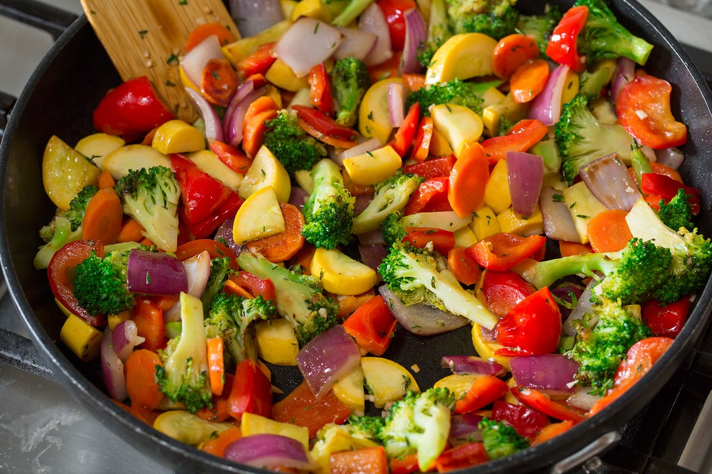

Sauteed Vegetable Medley

Description
For hot summers and cold winter evenings, sometimes a nice vegetable medley is what you need. Through trial and error the following recipe was made!
Ingredients
- Broccoli
- Summer Squash
- Red Bell Peppers
- Sweet Onions
- Carrots
- Olive Oil
- Salt
- Black Pepper
Directions
- Slice summer squash, carrots, red bell peppers, and onions.
- Turn the stove on medium heat. Add olive oil to the pan and start mixing in the carrots, onions, and red bell peppers.
- Add salt and black pepper to the pan.
- After the added vegetables are slightly seared, add in the summer squash and lastly the broccoli. Let the vegetables cook on medium heat.
- Your vegetables are now done! Enjoy!